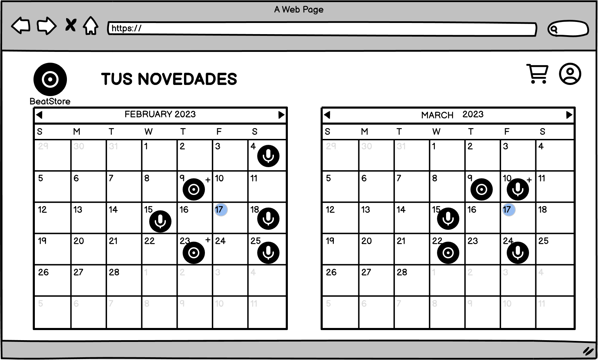

Pantalla principal de la página. En ella se muestran los vinilos ordenados por novedades de forma predeterminada.Al seleccionar cualquiera de los vinilos aparecerán los detalles del mismo tal y como se muestran en el boceto.En la página principal se puede filtrar y ordenar la búsqueda, pulsando sobre los botones correspondientes y aparecerán las opciones mostradas en los bocetos.
Gestión de valoraciones y comentarios
Pantalla que se accede pulsando en el botón de comentarios, en ella se podrán ver los comentarios del vinilo junto con su valoración.Pantalla que se accede pulsando en el botón de comentarios una vez te has registrado, en ella podrás añadir tu comentario al vinilo además de ver el resto de comentarios y su valoación.
Gestión de seguimiento de artistas y notificación de noticias o eventos.
Esta pantalla sirve para logearse, se accede a ella desde el menu que se desplega al pulsar en el icono superior de arriba a la derecha, o al tratar de acceder a funcionalidades solo accesibles mediante un usuario registrado
A esta pantalla se accede pulsando el botón de Top Ventas. En ella se muestra el top de los vinilos más vendidos y el de los artistas que más venden. Al pulsar en un disco se abre la pantalla
donde se ven los detalles del mismo y donde puedes acceder a la compra del mismo. Al pulsar en un disco se abre la pantalla donde se ven los detalles del mismo y donde puedes acceder a la compra del
mismo. Al pulsar en uno de los artistas, se abre la pantalla del artista con sus discos y sus eventos.
En esta pantalla se muestran los discos del artista así como su calendario de eventos y lanzamientos, también se da la opción de Seguir
al artista y se muestra el número de seguidores que tiene. Al pulsar sobre los discos se abre la correspondiente pantalla del vinilo. Y al pulsar sobre un día del calendario se podrá ver más
información acerca del evento o lanzamiento que se produzca ese día en cuestión.

A esta pantalla se accede al pulsar "Novedades" desde el menú que aparece al pulsar sobre el icono de la cuenta visible en la esquina
superior derecha. En ella se muestra el calendario de eventos de los artistas a los que sigues. Al pulsar sobre un día aparece la siguiente pantalla:
Donde aparecen los eventos y lanzamientos con un poco de información.